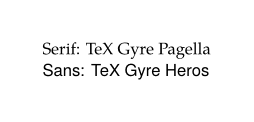
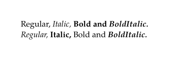
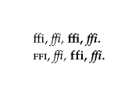
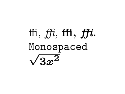

Syntax (autogenerated)
| \definefontfamily[...][...][...][...=...,...] | |
| [...] | name |
| [...] | rm ss tt mm hw cg roman serif regular sansserif sans support teletype type mono handwritten calligraphic math mathematics |
| [...] | font |
| rscale | number |
| designsize | default auto |
| goodies | file |
| features | name |
| tf | text |
| bf | text |
| it | text |
| sl | text |
| bi | text |
| bs | text |
| sc | text |
| \definefontfamily[...][...][...][...,...] | |
| [...] | name |
| [...] | rm ss tt mm hw cg roman serif regular sansserif sans support teletype type mono handwritten calligraphic math mathematics |
| [...] | font |
| [...,...] | name |
Syntax
Description
- typescript identifier
- font class
- existing font name
Example
In the first example we create a new typeface with the name mainface which includes fonts from the TeX Gyre family. Even though there is no math used in this example it is better to set one because math symbols are sometimes used in text mode.
-
\definefontfamily [mainface] [rm] [TeX Gyre Pagella] \definefontfamily [mainface] [ss] [TeX Gyre Heros] \definefontfamily [mainface] [mm] [TeX Gyre Pagella Math] \setupbodyfont[mainface] \starttext \startTEXpage[offset=2.5em] \rm Serif: TeX Gyre Pagella \ss Sans: TeX Gyre Heros \stopTEXpage \stoptext
produces
- 
In this example we are switching the fonts which are used for the upright, italic etc. alternatives. With the help of the style keyword you access one of the predefined styles, by default \definefontfamily uses the following styles for each alternative:
| Alternative | Style |
|---|---|
| tf | regular |
| it | italic |
| sl | slanted |
| bf | bold |
| bi | bolditalic |
| sc | smallcaps |
-
\definefontfamily[changedstyles][rm][TeX Gyre Pagella][tf=style:italic,it=style:bold,bi=style:bolditalic,bf=style:regular] \setupbodyfont[pagella] \starttext \startTEXpage[offset=2.5em] \rm\tf Regular, \it Italic, \bf Bold and \bi BoldItalic. \switchtobodyfont[changedstyles] \rm\tf Regular, \it Italic, \bf Bold and \bi BoldItalic. \stopTEXpage \stoptext
produces
- 
-
\definefontfamily[changedfiles][rm][TeX Gyre Pagella][it=file:texgyreherositalic,bi=file:texgyrecursorbolditalic] \setupbodyfont[changedfiles] \starttext \startTEXpage[offset=2.5em] \tf Regular, \it Italic, \bf Bold and \bi BoldItalic.
produces
- internal error: copy error R8RRkx/cropped.pdf
-
\definefontfamily[changedfeatures][rm][TeX Gyre Pagella][tf=features:smallcaps,bf=features:none] \setupbodyfont[pagella] \starttext \startTEXpage[offset=2.5em] \tf ffi, \it ffi, \bf ffi, \bi ffi. \switchtobodyfont[changedfeatures] \tf ffi, \it ffi, \bf ffi, \bi ffi. \stopTEXpage \stoptext
produces
- 
If it is not possible to install fonts system-wide, one can explicitly specify the filename of a font. Custom fonts often don't come with math symbols or a fitting monospaced font. One can replace these using Latin Modern which comes with ConTeXt.
-
\definefontfamily [mainface][serif] [Latin Modern Roman] [tf=file:filename_serif_regular.ttf, it=file:filename_serif_italic.ttf, bf=file:filename_serif_bold.ttf, bi=file:filename_serif_bold_italic.ttf, sc=file:filename_serif_smallcaps.ttf] \definefontfamily [mainface][sans] [Latin Modern Sans] [tf=file:filename_sans_regular.ttf, it=file:filename_sans_italic.ttf, bf=file:filename_sans_bold.ttf, bi=file:filename_sans_bold_italic.ttf, sc=file:filename_sans_smallcaps.ttf] \definefontfamily [mainface] [mono] [Latin Modern Mono] [features=none] \definefontfamily [mainface] [math] [Latin Modern Math] \setupbodyfont [mainface,11pt] \starttext \startTEXpage[offset=2.5em] \tf ffi, \it ffi, \bf ffi, \bi ffi. \tt Monospaced $\sqrt{3x^2}$ \stopTEXpage \stoptext
produces
- 